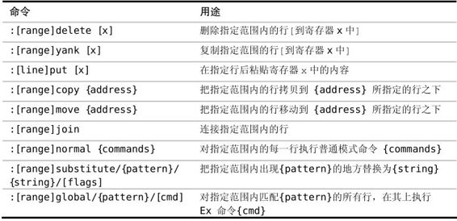

，我们可以看到Vim支持而vi不支持的功能列表。Vim对功能的增强是必要的，但另一方面它却仍继承了大量的遗产。这些指导Vim先祖们设计的约束，给我们提供了一个非常高效的命令集，这在今天依然很有价值。
，我们可以看到Vim支持而vi不支持的功能列表。Vim对功能的增强是必要的，但另一方面它却仍继承了大量的遗产。这些指导Vim先祖们设计的约束，给我们提供了一个非常高效的命令集，这在今天依然很有价值。 技巧27结识Vim的命令行模式
命令行模式会提示我们输入一条 Ex 命令、一个查找模式，或一个表达式。在本节，我们将结识一些操作缓冲区中的文本的Ex命令，并学习一些可在此模式中使用的特殊按键映射项。
在按下:键时，Vim会切换到命令行模式。这个模式和shell下的命令行有些类似，我们可以输入一条命令，然后按<CR>执行它。在任意时刻，我们都可以按<Esc>键从命令行模式切换回普通模式。
出于历史原因，在命令行模式中执行的命令又被称做 Ex 命令，参见Vim（及其家族）的词源。在我们按/调出查找提示符或用<C-r>=访问表达式寄存器（参见技巧16）时，命令行模式也会被激活。本节介绍的一些技巧在这些不同的提示符下都适用，不过本节内容主要侧重在Ex命令上。
我们可以用Ex命令读写文件（:edit和:write），创建新标签页（:tabnew）及分割窗口（:split），或是操作参数列表（:prev/:next）及缓冲区列表（:bprev/:bnext）。事实上，Vim为几乎所有功能都提供了相应的Ex命令（参见:h ex-cmd-index 可获得完整列表）。
在本节中，我们主要关注那些用来编辑文本的 Ex 命令，表5-1列出了其中最有用的一些命令。
在这些命令中，绝大部分都可指定所操作的范围，我们将在技巧28中了解这意味着什么。:copy命令对快速复制一行非常好用，这将在用‘：t’命令复制行中介绍。:normal命令提供了一种便捷的方式来对指定范围内的行做相同的修改，这将在技巧30中介绍。
我们将在第10章里学到更多关于:delete、:yank及:put命令的知识。:substitute命令和:global命令非常强大，所以每个命令都用单独的一章来介绍，详细内容请看第14章和第15章。
表5-1操作缓冲区文本的 Ex 命令

Vim命令行模式中的特殊按键
在命令行模式中，键盘上的大部分按键都只是简单输入一个字符，这点与插入模式类似。只不过在插入模式中，文本被输入到缓冲区里，而在命令行模式中，文本出现在命令行上。另外，在这两种模式中都可以用组合键触发命令。
有些命令在插入模式和命令行模式中可以通用。例如，可以用<C-w>和 <C-u>分别删除至上个单词的开头及行首，也可以用<C-v>或<C-k>来插入键盘上找不到的字符，还可以用<C-r>{register}命令把任意寄存器的内容插入到命令行，就像在技巧15中见过的那样。然而，有些命令行模式中的组合键在插入模式中不存在，我们将在技巧33中结识几个这样的命令。
在命令行提示符下，可以使用的动作命令数量很有限。<left>和<right>光标键可以一次把光标向左或右移动一个字符，与我们已经习以为常的普通模式下的大量动作命令相比，这让人感觉极度受限。然而，正如我们即将在技巧34中看到的那样，Vim的命令行窗口提供了构造复杂命令所需的完整编辑能力。
Ex命令影响范围广且距离远
有时使用 Ex 命令，能比用普通模式命令更快地完成同样的工作。举个例子，普通模式命令一般操作当前字符或当前行，而 Ex 命令却可以在任意位置执行，这意味着我们无需移动光标就可以使用 Ex 命令做出修改。但使 Ex 命令脱颖而出的最让人赞叹的功能，是它们拥有能够在多行上同时执行的能力。
一般地说，Ex命令操作范围更大，并且能够在一次执行中修改多行；或者可以进一步精炼为Ex命令影响范围广且距离远。
Vim（及其家族）的词源
ed是最初的 Unix 文本编辑器，它编写于图形显示器很稀有的年代，那时源代码通常是打印在纸带上，并在电传终端机(1)上进行编辑。在终端上输入的命令被送到大型机上进行处理，每条命令的输出会被打印出来。在那个年代，从终端到大型机之间的连接很慢，以至于一个快速打字员比网络还快，他们输入命令的速度要比命令被发出去处理更快。在这种情况下，ed能够提供一个简洁的语法变得异常重要。想一下为何p被用来打印当前行，而%p被用来打印整个文件，皆缘于此。
ed历经了几代的改进，包括em（意为“editor for mortals”，即“人类的编辑器”）、en，最终到ex(2)。此时图形显示器已经比较普及了，ex增加了一个把终端屏幕设置成交互窗口的功能，并在窗口内显示文件的内容。这样，在做修改时实时看到变化成为了可能。此屏幕编辑模式由:visual命令激活，其简写为:vi，这即是vi这个名字的由来。
Vim 代表改进版的 vi （vi improved），然而这只是一种谦虚的说法，我实在无法忍受使用标准的vi。通过查阅:h vi-differences，我们可以看到Vim支持而vi不支持的功能列表。Vim对功能的增强是必要的，但另一方面它却仍继承了大量的遗产。这些指导Vim先祖们设计的约束，给我们提供了一个非常高效的命令集，这在今天依然很有价值。